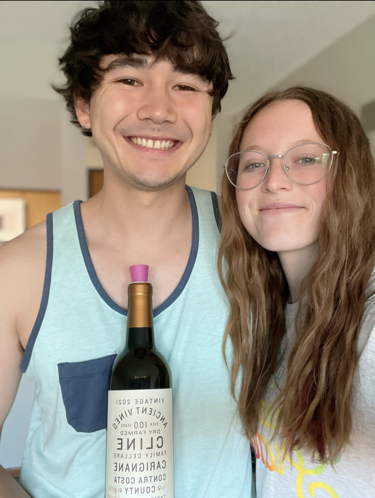

Carignan
What is it?
Carignan is a red grape known for its ability to pair beautifully with many foods [2]. Carignan grows mostly in France, and it is often used in red blends there, though Carignan wines can also be found in Spain and Italy [1]. Carignan grapes are also known for being red fruit-forward and lower in tannin than other red wines. Carignan was the most planted wine grape in France a few decades ago; Carignan vines produce a lot of grapes and do well in drought or near-drought conditions [2]. Recently, it has received some recognition for the rich and earthy flavors it is capable of instead of just being seen as a budget, low-quality grape [2].
Primary flavors of Carignan are dried cranberry, raspberry, tobacco leaf, baking spices, and cured meat [1]. This wine is known as a food wine, so it is said to go well with many dishes. We had this wine with a zucchini pomodoro penne, which seemed to pair well. We couldn't find this grape in a 100% Carignan wine; the wine we tried was a red blend that also included small percentages of Zinfandel and Chardonnay grapes.
Molly's Rating and Tasting Notes
4.6. As far as dry red wines go, it isn't bad. I get some scents of leather and plum, and the taste is almost equal parts fruity and umami. The finish is quite dry. It's a red wine I bet my mom would like, but I can't say it's one I would go back to.
Ryan's Rating and Tasting Notes
8.6. On the nose, I get dark fruit such as plum and raspberry, as well as warm spices. There's also a vague resemblance of Dr. Pepper and flat cola. If I had to pick out a single thing that this smells like, I would say those chalky bottlecap candies. Upon tasting, the first thing that stuck out to me was that it is light-bodied. However, that's not to say that it's short on flavor; nay, this wine is dripping and gushing with flavor. There are strong notes of cranberry, potting soil, and might I dare say root beer. Hidden underneath, there are hints of cinnamon sticks, smoke, and vanilla. There is a fair amount of acidity that makes it zingy and fun to drink but not enough to overpower the rest of the wine. Overall a delecatable red wine that just keeps getting better with each sip.
References
[1] Madeline Puckette and Justin Hammack. Wine Folly: The Master Guide. Avery - A Penguin Imprint, New York, NY, 2018.
[2] "Guide to Carignan: The Food Wine." Wine Folly. https://winefolly.com/deep-dive/carignan-guide-food-wine/. Accessed: June 2023.
[3] J. Robinson.The Oxford Companion to Wine, Third Edition. Oxford University Press, 2006.
Wines we haven't finished
- Fernāo Pires -- Week 22